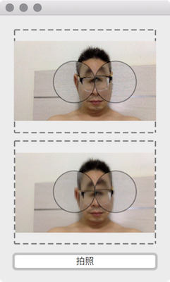

可以使用 OpenCV 来操作摄像头，不过 Qt5 已经自带了调用系统摄像头的功能，在 .pro 文件中增加下面的模块:
1
| QT += multimedia multimediawidgets
|
主要是使用下面 3 个类，使用起来很方便:
- QCamera
- QCameraViewfinder
- QCameraImageCapture
下面代码的效果为

1
2
3
4
5
6
7
8
9
10
11
12
13
14
15
16
17
18
19
20
21
22
23
24
25
26
27
28
29
30
31
32
33
34
35
36
37
38
39
40
41
42
43
44
45
46
47
48
49
50
51
52
53
54
55
| #include <QApplication>
#include <QDebug>
#include <QCamera>
#include <QCameraViewfinder>
#include <QCameraImageCapture>
#include <QImage>
#include <QPixmap>
#include <QVBoxLayout>
#include <QPushButton>
#include <QLabel>
int main(int argc, char *argv[]) {
QApplication a(argc, argv);
a.setStyleSheet("QCameraViewfinder, QLabel { border: 2px dashed grey;}");
QCamera *camera = new QCamera();
QCameraViewfinder *viewfinder = new QCameraViewfinder();
QCameraImageCapture *imageCapture = new QCameraImageCapture(camera);
camera->setViewfinder(viewfinder);
viewfinder->setAttribute(Qt::WA_StyledBackground, true);
QLabel *previewLabel = new QLabel("");
QPushButton *captureButton = new QPushButton("拍照");
viewfinder->setFixedHeight(150);
previewLabel->setFixedHeight(150);
previewLabel->setMinimumWidth(150);
previewLabel->setAlignment(Qt::AlignCenter);
QVBoxLayout *layout = new QVBoxLayout();
layout->addWidget(viewfinder);
layout->addWidget(previewLabel);
layout->addWidget(captureButton);
layout->addStretch();
QWidget *window = new QWidget();
window->setLayout(layout);
window->show();
camera->start();
QObject::connect(captureButton, &QPushButton::clicked, [=] {
imageCapture->capture("capture.jpg");
});
QObject::connect(imageCapture, &QCameraImageCapture::imageCaptured, [=](int id, const QImage &image) {
Q_UNUSED(id)
QImage scaledImage = image.scaled(previewLabel->size(), Qt::KeepAspectRatio, Qt::SmoothTransformation);
previewLabel->setPixmap(QPixmap::fromImage(scaledImage));
});
return a.exec();
}
|
*QCamera camera = new QCamera() 初始化摄像头对象，调用 camera->start() 打开摄像头，成功打开后可以在 QCameraViewfinder 上实时的看到摄像头的图像，如果打开失败则什么都看不到。
QCameraImageCapture::capture() 用于捕捉摄像头的图像，完成后会发射信号 imageCaptured()，可以在这个信号的槽函数中把捕捉到的图像显示给用户，如果满意的话就可以保存到文件，或者上传到服务器等。capture() 接受一个参数，为截图后图片保存的路径，如果使用默认的路径，每次截图都会生成一个图片，如果想截图产生的图片都保存为一个固定的图片文件，则传入一个路径即可。
仔细的看一下可以发现 QImage::scaled() 缩放的图像和 QCameraViewfinder 上缩放的图像的效果不一样，这是因为缩放的算法不同导致的，如果不满足需求，可以使用更专业的图像缩放算法进行处理。
需要注意的是 QCameraViewfinder 的 size policy 很奇怪，vertical 和 horizontal 都是 Preferred，和 QLabel 默认的 size policy 一样，但是表现出来的却是 expanding 的样子，甚至有 spacer 时，spacer 的 expanding 都没有效果，空间全被 QCameraViewfinder 占据了。
此外，怎么判断是否启动了摄像头？文档里说:
Starts the camera.
State is changed to QCamera::ActiveState if camera is started successfully, otherwise error() signal is emitted.
但是实际情况却是 camera->start() 后如果摄像头不可用也不会发出 error 信号，不过我们可以根据 camera 的 status 来判断:
1
2
3
| QObject::connect(camera, &QCamera::statusChanged, [] (QCamera::Status status) {
qDebug() << status;
});
|